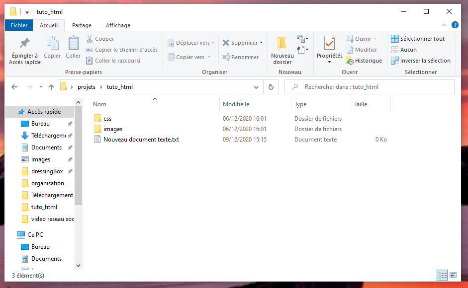
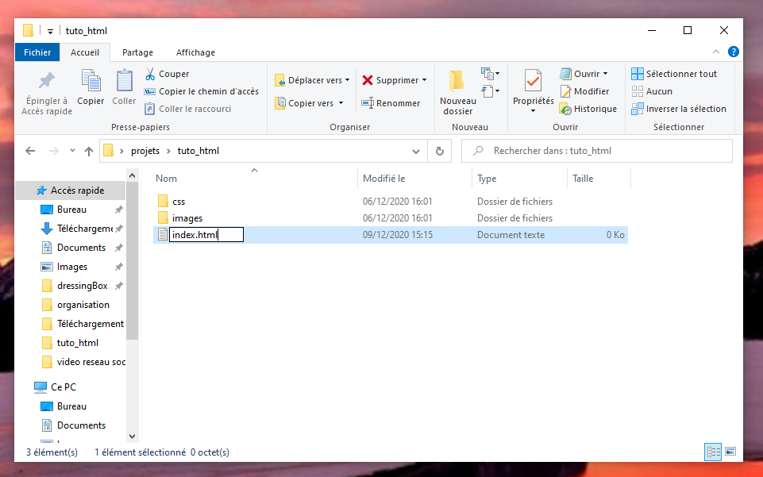

L'organisation du dossier est très important. En effet, lorsque l'on a qu'un seul projet, celà ne nous parrait pas important. Pourtant, les projets vont vite s'enchainer et devenir beaucoup plus important. Une organisation s'impose pour pouvoir mieux se retrouver.
Dans un premier temps, il faut créer un dossier qui regrouperas tous nos dossiers de projets de code

Ouvre le dossier "projets", et à l'intérieur de celui-ci, il faut créer un autre dossier au nom du projet que tu veux réaliser.
// Par exemple ici, je l'ai appelé tuto_html

/!\ Pour le nom de dossier/fichier il ne faut pas mettre d'espace.
On peut le remplacer par un tiret vers le bas (underscore [touche 8]).
J'ouvre le dossier tuto_html et dans celui-ci je vais encore créer deux dossiers. Un dossier images et un autre css

Le dossier images regroupera toutes les images que nous aurons besoin pour la création du site.
/!\ Nommez les simplement pour qu'elles ne soient pas compliqué à écrire dans le code, sans accents et caractères spéciaux. Les chiffres sont acceptés.
Exemple : maison.png, fleur.jpg
Le dossier css regroupera toutes les feuilles de style dont nous aurons besoin.
Pour la prochaine étape, nous aurons besoin de voir l'extension du fichier pour la renomer.
Pour celà il faut aller dans "Affichage" puis cocher la case "Extension de noms de fichiers"

Maintenant il faut créer la page Html. C'est dans cette page que va se trouver la structure du site ainsi que tous les éléments de texte.
1. Faire un clic droit sous le dossier "images".
2. Selectionner "nouveau" -> "document texte".

3.Faites un clic droit sur ce nouveau fichier et selectionner "renomer".
On le renomme en index.html
// On le nomme index.html car c'est ainsi que l'on nomme sa page d'accueil. Beaucoup d'herbergeurs demandent d'avoir un fichier index.html pour pouvoir faire fonctionner le site. En développement local il n'est pas nécessaire de le nommer comme celà mais il est préférable de s'habituer à la convention.
Un message va apparaitre. Il demande si vous voulez vraiment modifier l'extension. Vous dites oui

Voilà! la page html est créée.
On se positionne dans le dossier "css".
Clic droit -> nouveau -> document texte
Puis on va nommer ce fichier : style.css

// Ce fichier servira pour la customisation du projet.
La page css sert par exemple à changer la police d'un texte,
changer la couleur de fond de page, d'une zone ou d'un texte,
positionner ses éléments de textes comme on le souhaite etc...